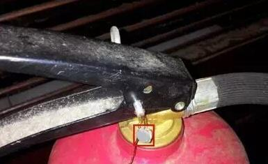
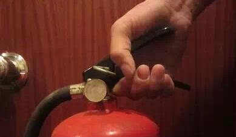
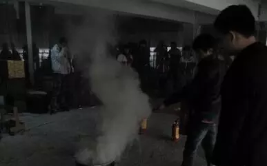

| 常用灭火器使用方法 |
| 平安校园 2017-09-25 |
|
说到灭火器，估计大伙都知道，是用来灭火的，但到底怎么用呢？或是说怎样正确的使用呢？今天小安就来教教大家正确的使用方法。 粉灭火器使用方法 1.使用前要将瓶体颠倒几次，使筒内干粉松动 2.然后除掉铅封 
3 .拔掉保险销
4.左手握着喷管
5.右手提着压把 
6.在距火焰两米的地方，右手用力压下压把，左手拿着喷管左右摇摆，喷射干粉覆盖燃烧区，直至把火全部扑灭
 泡沫式灭火器使用方法 使用泡沫灭火器时应该注意，人要站在上风处，尽量靠近火源，因为它的喷射距离只有2~3米，要从火势蔓延最危险的一边喷起，然后逐渐移动，注意不要留下火星。手要握住喷嘴木柄，以免被冻伤。因为二氧化碳在空气中的含量过多，对人体也是不利的，所以在空气不畅通的场合，喷射后应立即通风。
二氧化碳灭火器使用方法 二氧化碳灭火器有开关式和闸刀式两种。使用时，先拔去保险销，然后一手握住喷射喇叭上的木柄，一手按动鸭舌开关或旋转开关，最后提握器身。需要注意的是：闸刀式灭火器一旦打开后，就再也不能关闭了。因此，在使用前要做好准备。 |
|
|
|
|
|
|
|